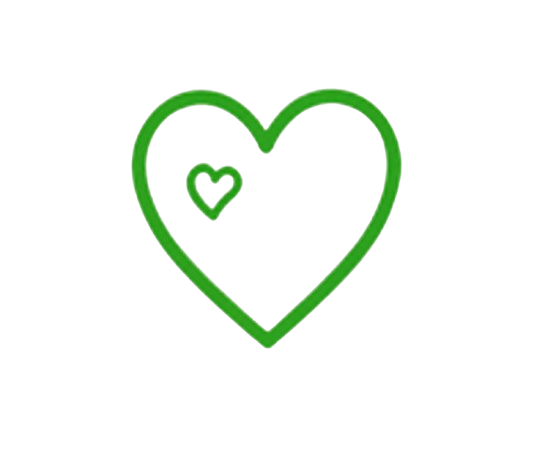

Create for a Cause
Create with heart. Make a difference.
In this experience, children use their creativity to support causes they care about. They plan projects, make items, raise awareness, and give back to the community through their own creations.

Children Explore
Donation Drives
Care Packages
Awareness Campaigns
Helping Events
Skills Children Naturally Build
- Empathy
- Responsibility
- Teamwork
- Leadership
- Communication
Children Grow Shape the Experience
Children choose causes, plan projects, and decide how they want to help others.
Making an Impact
Children learn that their actions—big or small—can bring hope, support, and positive change to people and places in need.
What Parents Should Know
Sessions blend creative projects with a community purpose. Children work individually and in teams to plan, create, and share projects that support causes they care about.
We provide craft supplies, packaging materials, and display items for awareness projects. Children may also bring items to donate or upcycle. All materials are age-appropriate and safe to use.
All activities are age-appropriate with adult guidance. Scissors, glue, and tools are introduced with clear safety instructions. Small group sizes ensure every child gets attention and support.
Create for a Cause runs as part of Bright Dreamers experiences throughout the year. Visit our Get Involved page or contact us to learn about upcoming sessions, age groups, and how to register your child.